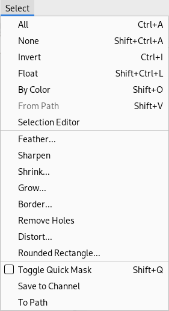

Figure 4.2. Fix selection using the "Select" menu

From the Select menu choose “All” to make sure that everything is selected, choose “None” to remove the selection, or “Invert” to invert the selected area.
How to tell: You may have previously selected a part of your image, but now you are trying to work on another part that is not inside the selection. Look for the selection outline and check if it is where you want it to be.
How to fix: There are a couple of possibilities.
-
If you can't see any selection, there may be a very small one, or it is outside the visible area on your screen, or it can even be one that contains no pixels. If this is the case, either display the selection via → → , or remove the selection via → or the shortcut Shift+Ctrl+A.
-
If you can see a selection and thought you were inside it, it might be inverted from what you think. The easiest way to tell is to hit the Quick Mask button: the selected area will be clear and the unselected area will be masked. If this is the problem, you can solve it by choosing “Invert” in the menu (after turning the “Quick Mask” off if you still have that enabled).
![[Note]](images/note.png)
|
Note |
|---|---|
|
If doing this has destroyed a selection that you wanted to keep, use “Undo” (Ctrl+Z) to restore it, and then we can continue to figure out what the problem is. |